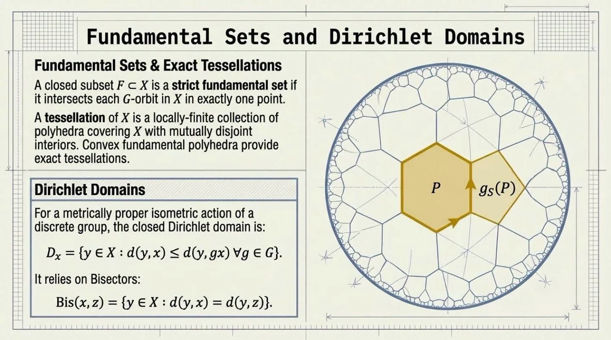

기둥 3 · 움직임 · 17장
대표 타일과 디리클레 영역 — 한 조각으로 바닥 전체를
궤도마다 대표 하나, 그리고 「가장 가까운 구역」
궤도마다 대표 하나, 그리고 「가장 가까운 구역」
핵심 질문 — 얌전한 도장 무리가 있으면, 바닥 전체를 빈틈없이 덮는 「대표 타일 한 장」을 어떻게 만들까?
16장의 얌전한 작용으로 접으면 깔끔한 공간이 나와요. 그 접은 공간을 원래 공간 안에 「한 조각」으로 그린 것이 기본 영역이에요. 조각을 도장으로 옮기면 바닥 전체가 빈틈없이 덮여요. 그 조각을 만드는 자연스러운 방법이 디리클레 영역이에요.
숫자 요약은 이 장의 예시 계산에서 나온 값입니다(실제 데이터가 아닌 설명용 값).
조별 과제예요. 바닥을 덮을 타일 한 장을 설계해 오세요.
타일 그림은 제가 그릴게요.
바람조는 「가장 가까운 곳」으로 자를 거예요.
행렬·벡터, 복잡한 공식을 몰라도 됩니다. 그림을 움직여 보고, 밑줄 친 말을 누르면 뜻이 나옵니다.
이 페이지 사용법: 밑줄 친 말을 누르면 뜻이 나옵니다(Esc로 닫기). 단계마다 그림을 직접 움직여 보고, 끝의 확인 퀴즈로 점검하세요. 앞 장: 16 얌전한 작용의 등급 — 도장이 말썽을 부릴 때
픽셀조는 「정사각형 타일로 궤도 대표 고르기」, 바람조는 「가장 가까운 구역(디리클레 영역)으로 타일 만들기」를 맡아요. 두 타일의 넓이를 비교해 발표합니다.
바닥의 아무 점이나 누르면, 그 점의 궤도 중 딱 하나가 노란 타일 안에 있어요.
원점이 다른 격자 점보다 가까운 곳을 칠하면 또 다른 타일이 나와요.
타일 테두리 위의 점은 몇 번 세어지는지 조심해.
대표 타일 하나와 도장 세트만 있으면 무늬 전체를 다시 만들 수 있어요.
15장의 몫공간 X/G는 추상적이었어요. 기본 영역은 그것을 원래 공간 안에 그린 「모형」이에요.
디리클레 영역은 기지국 구역, 학교 배정, 물류 창고 담당 구역을 나누는 보로노이 그림과 같은 생각이에요.
타일 경계에서 「한 번만 세기」가 오늘의 작은 함정이에요. 그림을 눌러 직접 세어 보세요.
상황 질문 — 학교의 모든 반에서 대표를 딱 한 명씩 뽑아 모으면, 그 모임으로 전교생을 대표할 수 있을까요?
[0, 1)에서 한쪽만 괄호가 둥근 건 왜예요?
학교 수학으로 보면: 01장의 구간 표기예요. [0, 1)은 0은 넣고 1은 뺀 구간이에요. 1을 빼야 0과 1(같은 궤도)이 두 번 세어지지 않아요.
| 식 조각 | 읽는 법 | 뜻 |
|---|---|---|
| [0, 1) × [0, 1) | 반열린 정사각형 | 가로·세로 모두 0 ≤ 수 < 1 |
| (x, y)의 대표 | 소수 부분만 남기기 | (3.7, −1.2) → (0.7, 0.8) |
| F ∩ G·x = 한 점 | 기본 집합 조건 | 궤도마다 딱 한 점만 F에 들어감 |
점 (3.7, −1.2)의 궤도: 가로·세로로 정수만큼 옮긴 모든 자리
그중 [0, 1) × [0, 1) 안에 드는 것: (3.7 − 3, −1.2 + 2) = (0.7, 0.8) — 딱 하나
닫힌 [0, 1] × [0, 1]로 하면 원점의 궤도에서 (0,0), (1,0), (0,1), (1,1) 네 점이 들어감 → 대표가 4명
경계를 반쯤 빼야 대표가 딱 한 명이 되는군요!
ℤ²의 점은 모두 m × (1, 0) + n × (0, 1) = (m, n) 꼴이에요(m, n은 정수). 「가로 m걸음, 세로 n걸음」이라는 뜻이에요.
대표 구하기도 벡터 빼기예요: (3.7, −1.2) − (3, −2) = (0.7, 0.8). 빼는 벡터 (3, −2)가 바로 사용한 도장이에요.
(5.25, 2.5) − (5, 2) = (0.25, 0.5) → 대표
(−0.3, 4) − (−1, 4) = (0.7, 0) → 대표 (세로 0은 [0, 1)에 들어감)
행렬·벡터를 처음 본다면 이 상자는 건너뛰어도 본문을 따라올 수 있어요.
반마다 대표를 딱 한 명씩 뽑아 모은 명단은 전교생을 빠짐없이, 겹침 없이 대표해요.
기본 집합은 궤도마다 정확히 한 점을 가진 집합이에요. ℤ²가 평면에 작용할 때 [0, 1) × [0, 1)이 그 예예요. 닫힌 정사각형 [0, 1] × [0, 1]은 기본 영역(안쪽은 안 겹치고, 옮기면 바닥을 덮음)이지만 테두리에서 대표가 여럿이에요.
바닥의 아무 점이나 눌러 보세요. 노란 타일 안에 궤도 점이 몇 개인가요?
어디를 눌러도 딱 하나네요!
테두리 바로 위를 눌러 봐. 반열린이라 한쪽 테두리만 타일에 들어가.
원자료 「Fundamental Sets and Dirichlet Domains」 위 상자.

상황 질문 — 휴대폰은 가장 가까운 기지국에 연결돼요. 기지국이 격자 모양으로 서 있다면, 한 기지국이 맡는 구역은 어떤 모양일까요?
D_x = {y : d(y, x) ≤ d(y, gx) 모든 g}는 어떻게 읽어요?
학교 수학으로 보면: 중학교 「수직이등분선」이에요. 두 점에서 거리가 같은 점들이 수직이등분선이고, 한쪽 점에 더 가까운 곳이 그 선의 한쪽 편이에요.
| 식 조각 | 읽는 법 | 뜻 |
|---|---|---|
| d(y, x) | 와이와 엑스 사이 거리 | 자로 잰 거리 |
| d(y, x) ≤ d(y, gx) | 엑스가 지엑스보다 가깝거나 같다 | 수직이등분선의 x 쪽 |
| Bis(x, z) | 엑스와 제트의 수직이등분선 | d(y, x) = d(y, z)인 점 y들 |
정사각형 격자, x = (0, 0). 가장 가까운 궤도 점: (±1, 0), (0, ±1)
수직이등분선: x = ±0.5, y = ±0.5
네 선으로 자른 조각: [−0.5, 0.5] × [−0.5, 0.5] → 넓이 1 (1단계 타일과 같은 넓이)
대각 점 (1, 1)의 수직이등분선 x + y = 1은 이 정사각형을 자르지 않아요
이웃 점마다 한가운데 선을 그어 자르면 끝! 넓이는 1단계 타일과 같네요.
기지국마다 「내가 가장 가까운 곳」을 맡게 하면 구역 지도가 생기고, 격자 모양으로 선 기지국은 모두 같은 모양의 구역을 맡아요.
디리클레 영역 D_x는 x가 궤도의 다른 점보다 가깝거나 같은 곳이에요. 얌전한 거리 보존 작용에서는 D_x가 기본 영역이 되고, 정사각형 격자에서는 정사각형, 벌집 격자에서는 정육각형이에요.
「벌집 격자」를 눌러 노란 영역의 변 수와 넓이를 보세요.
정육각형이에요! 벌집 모양!
격자 모양이 바뀌어도 넓이는 「격자점 하나당 넓이」와 같다는 걸 기억해.
원자료 아래 상자 「Dirichlet Domains」: D_x = {y : d(y, x) ≤ d(y, gx) ∀g}, Bis(x, z).
X2가 AI에게 「정사각형 격자 ℤ²의 기본 영역 [0, 1] × [0, 1] 안에는 원점 궤도의 점이 몇 개인가요?」라고 물었어요.
「정확히 한 점」 같은 깔끔한 말은 경계에서 자주 깨져요. AI 답을 꼭짓점·테두리 같은 경계 점으로 확인하세요.
원점이 다른 격자점보다 가깝거나 같은 곳의 넓이를 두고 맞붙었어요.
「「가장 가까운 곳」이면 둥글겠지. 반지름 0.5 원이라 약 0.79.」
「격자점 하나가 맡는 넓이니까 1!」
누가 맞을지 먼저 예상해 보고 단추를 누르세요. 판정은 계산 결과로만 합니다.
개념정리 흐름: 기본 집합과 기본 영역 → 디리클레 영역
| 개념 | 한 줄 뜻 | 일상 비유 | 비유의 한계 |
|---|---|---|---|
| 기본 집합 | 궤도마다 딱 한 점 | 반 대표 명단 | 보통 닫혀 있지 않아요 ([0, 1)) |
| 기본 영역 | 옮기면 바닥을 덮는 닫힌 타일 | 바닥 타일 한 장 | 테두리에서 대표가 여럿 |
| 디리클레 영역 | 가장 가까운 곳 = 수직이등분선으로 자른 조각 | 기지국 구역 | 거리 보존 작용에만 |
두 조의 타일 넓이가 똑같이 1! 과제 통과예요.
벌집 타일이 제일 예뻤어요.
경계는 반만 넣는다, 기억할게요.
다음 장 예고: 18장은 발표수업이에요. 격자를 두 기본 벡터로 만들고, 타일 넓이가 행렬식이라는 것과 모듈러 군의 신기한 타일을 봐요.